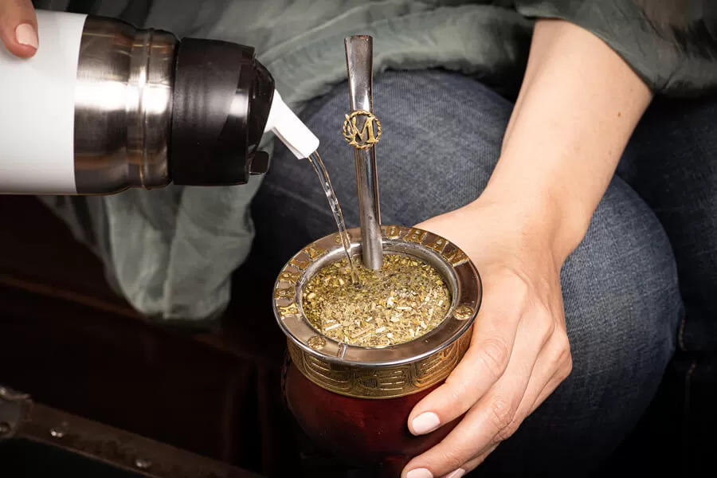

TRAMICHITIPS
Secretos para hacer un buen mate
- Llenar el mate en sus 3/4 partes. Un secreto es agitar el paquete de yerba para mezclar los componentes
- Con la mano cubrir la boca del mate y agitarlo de manera que la yerba mate se mezcle en el interior. Con ese movimiento intentar al finalizar que la yerba quede inclinada a 45 o sobre una pared del recipiente.
- Humedecer la yerba mate en la parte más baja con agua tibia, esperar a que se infusione(hinche), agregar otro chorrito más de agua y esperar, recién entonces colocar la bombilla en ese lugar.
- Comenzar a cebar sobre el sector de la bombilla y con algo de distancia para que el agua tenga un espacio de caída. De este modo, en el trayecto junta más oxígeno para producir burbuja, espumosidad.

Como curar tu Mate tramichero
- Llenar el mate con yerba, hasta 1cm por debajo de la virola. Algunos utilizan yerba usada y húmeda de otro mate porque tiene menos polvo, pero también se puede hacer con yerba nueva. Esperar a que se hinche luego de absorber el agua y agregar más agua tibia hasta que la superficie quede húmeda. Dejar reposar por 24hs.
- Al día siguiente, quitar la yerba y raspar el interior del mate con una cuchara para remover bien las membranas o los fragmentos de madera.